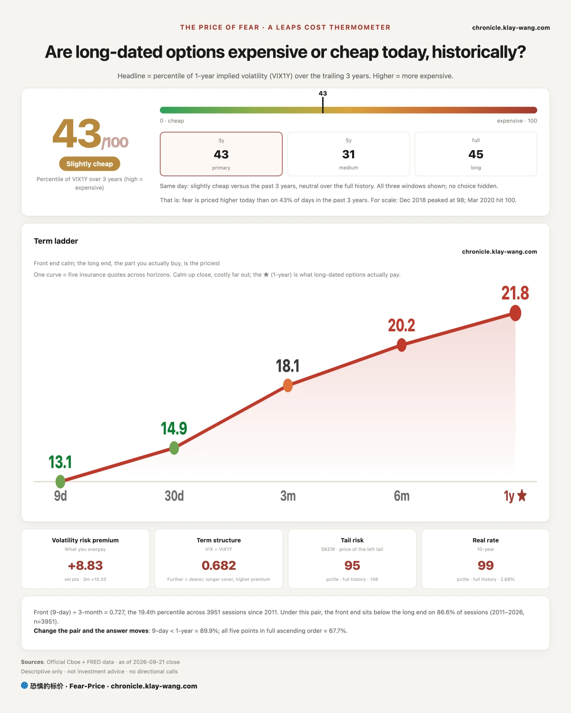
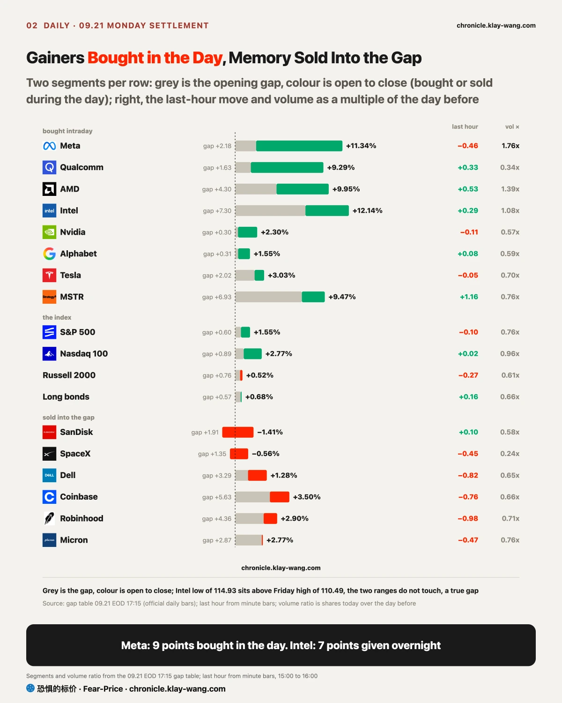
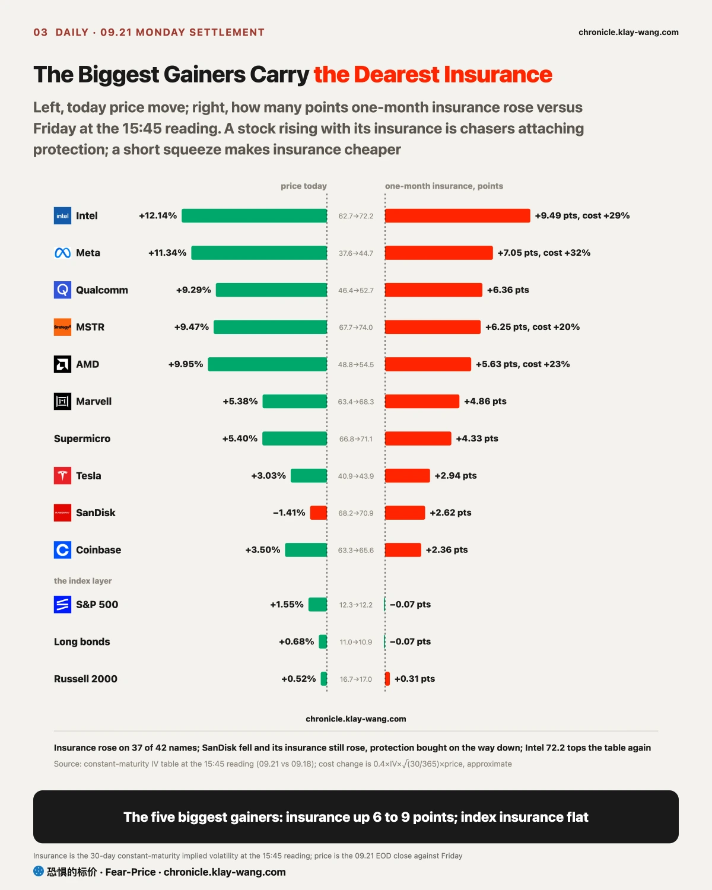
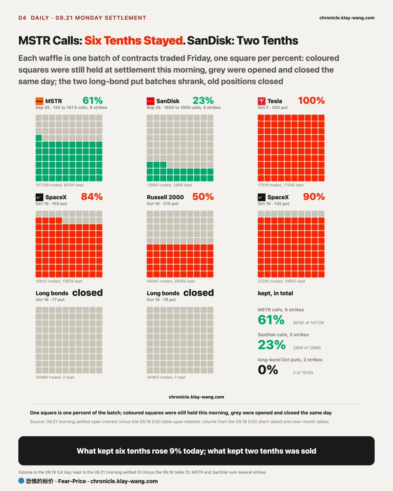
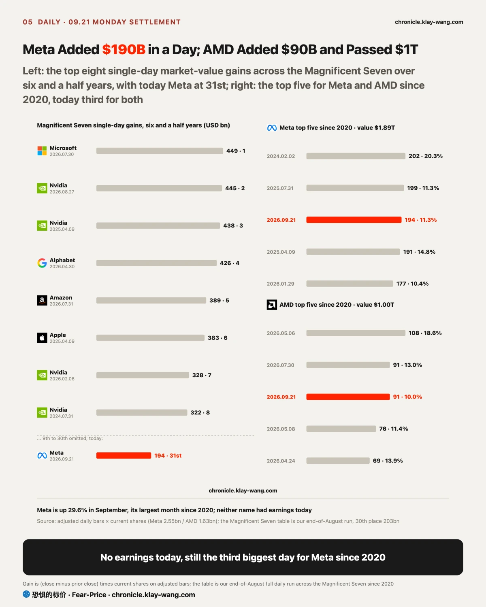
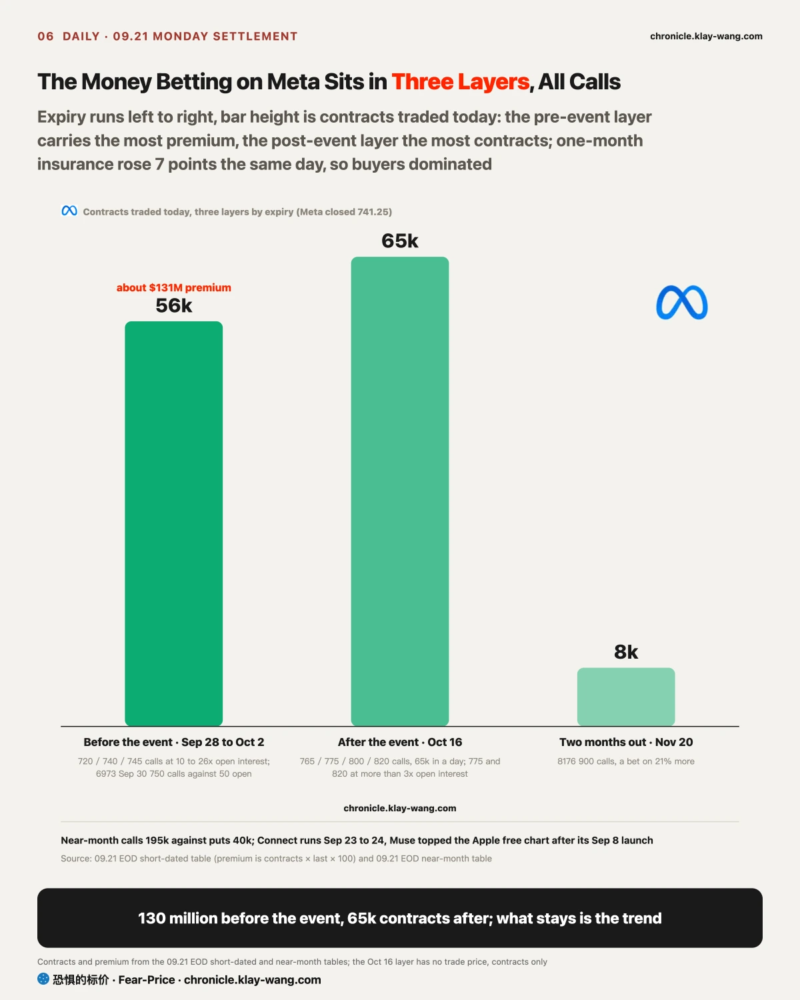

Fear-Price Index · Sep 21, 2026 · reading 43.0/100: one-year volatility VIX1Y at 21.8, in the 43.0th percentile of the past three years, where high means expensive. Daily ledger and definitions → chronicle.klay-wang.com · Please credit: Fear-Price Index
The index rose 1.5% and one-year insurance went from the 41.8th to the 43.0th percentile, almost nothing. One-month VIX is 14.87, CNN Fear and Greed 33.7, and the K index that divides one by the other is 2.27: the survey sits in the fear zone while VIX sits low, so more people say they are worried than pay for protection, and K would need VIX above 34 to fall through 1; history at chronicle.klay-wang.com/kindex, the index itself at chronicle.klay-wang.com/fear-price. What moved today was the credit layer: one-year insurance on high-yield bonds fell from 13.8 to 12.4 and on investment grade from 12.3 to 10.0. For you: index protection costs the same as last week.

The cross-asset moves string into three chains. Oil down, long bonds up, gold down 0.7%: Trump urged Ukraine to stop hitting refineries, the inflation worry that oil had been feeding stepped back a notch, long-end buyers came back, inflation hedges retreated, and energy fell 2.9%. Dollar up 0.3% at the high of the day, yen down 0.5%, stocks up: on a flight-to-safety day the dollar and yen rise together; today was carry positions being rebuilt, risk appetite back. Bitcoin at an eight-month high, 750 million dollars of shorts liquidated in a day, and the three crypto names joined chips as the group bought in the session.
Three layers of insurance define the day: one-month index insurance at 12.22 did not move, rate insurance at 81.2 did not move, one-year credit insurance came off, and all three macro layers price the hike as a one-off. The same day the biggest gainers carry the dearest insurance: Intel one-month insurance up 9.5 points to 72.2, top of the table a second week, Meta up 7, Qualcomm, MSTR and AMD each up about 6. A stock rising with its insurance has only one reading: the chasers are attaching protection; a short squeeze makes insurance cheaper. Single-name insurance up and index insurance flat says the money today picked stocks.
Which stocks, the gap-and-session split tells: a gap up is overnight news and futures pushing the price, nobody has paid the opening print, and money changes hands only after the open. Meta gapped 2.2 points and was bought for 9 more; Qualcomm 1.6 against 7.5; Intel 7.3 against 4.5; MSTR was given overnight, 6.9 against 2.4; SanDisk, Dell, Coinbase and Robinhood were all sold into the gap. If you hold the names sold into the gap, watch tomorrow for buyers after the open, not the size of today move.

The first group was chips, memory and crypto, and the test was how much of the money betting on them for this week would survive the Monday settlement, more than half meaning someone is there to take it. The settled open interest came in this morning, the contracts still held when the next day opens: the six MSTR calls traded 147k on Friday and 90k stayed, six tenths, and the stock rose 9.5% today; the five SanDisk calls traded 12.7k and only 2.9k stayed, two tenths, and it was sold into the open, down 1.4%. SanDisk sits 2% under its 20-day high of 1807; until it clears it, the shape is a stock being sold.
The second group was Alphabet, Meta and Tesla, and the test was whether anyone would buy after the Monday open. All three were bought; the weekend line, that without the next gap the rise is gone, did not hold today.
The third group was the banks, and the test was the day one-year insurance stops rising. Goldman one-year insurance fell from 38.65 to 34.19, the first fall since the decision, and the stock is back above its 200-day line.

Meta closed at 741.25, up 11.3%, its highest close since January this year, on 1.8 times Friday volume. Market value rose by about 190 billion dollars in one day, 31st on the six-and-a-half-year Magnificent Seven single-day table we built at the end of August, and the third largest for Meta itself since 2020, behind the 20% day in February 2024 and the July 2025 earnings day. No earnings today; what it has are two things that pay off this week: Muse at the top of the Apple free chart, and Connect on Wednesday and Thursday.
The money betting on it sits in three layers, all calls. The pre-event layer is the heaviest: calls expiring by October 2 traded 56k in a day for about 130 million dollars of premium, the heaviest three strikes at 720, 740 and 745 at 10 to 26 times open interest, the September 30 750 calls 6973 against 50 previously open. The mid-October layer has the most contracts: four October 16 strikes from 765 to 820 traded 65k in a day, 775 and 820 at more than three times open interest. Further out, 8176 November 20 900 calls, a bet on 21% in two months. Near-month calls 195k against puts 40k.
Put this month into its own history: September is up 29.6%, the largest month for Meta since 2020, ahead of 26.8% in November 2022. Of the 9 days since 2020 that rose more than 10%, the following five days were down 7 times, a median of −1.5%, and twenty days later it was 5 up and 4 down: the week after tends to give a little back, and beyond that shows no direction. There is nothing to squeeze: short interest is 1.13% of the float, 1.7 days to cover. What amplifies moves is the options: the close at 741 is above the 750 call wall, and 65k calls from 765 to 820 were opened in a day; whoever sold those calls has to buy stock as the price rises, so the move accelerates on the way up, and on the way back below 750 too. With this many calls, the normal trade would be holders selling covered calls for premium; volume does not show which side, but the price of insurance does: when covered-call selling dominates, insurance gets pushed down; today one-month insurance rose 7 points, so buyers dominated. One more number: realized volatility is 46 over the last 30 days and 62 over the last 10; one-month insurance at 44.7 looks dear and has not caught up with how the stock actually moves.
On valuation, 25 times last Friday, 28 times after today, at the top of the five-year range of 21 to 28.7; Evercore likens Muse to Gemini 3 for Alphabet last year and estimates the forward multiple could reach 25 to 30 times, target 860, an estimate rather than a baseline. And the 200-day line at 624 is 19% below, the August 2025 high of 788 6% overhead. In this spot, if it were me, I would either wait for the event and see how much of the three layers stays, or use insurance that costs a third more to lock in half of the 11%; insurance has not caught up with realized moves, so locking in half is not expensive. The 130 million bets on before the event, the 65k contracts after it; only the latter staying makes it a trend.

AMD closed at 615.52, up 10%, 4.3 points at the open and 5.4 in the session. The previous closing high was 581 on June 30; today it is already above the average analyst target of 604; market value rose about 90 billion, past one trillion for the first time, the third largest single day for AMD since 2020; at 142 times Friday earnings, a tenth higher today.
Options carry money in all four layers. Today layer: 57 million dollars of October 2 calls, of which the 41 million in the deep-in-the-money 520 strike is structural and not an opinion. Near-month layer: 5886 October 16 700 calls, twice open interest, a bet on 14% in three weeks; the same day 3317 600 puts against 206 previously open, 16 times, at-the-money protection. Long-dated layer: February 2027 900 calls at 17 times open interest, about 2000 each of the March 810 and 880 calls, 7555 December 1120 calls, and 3249 June 2027 500 puts alongside. One-year layer: one-month insurance up 5.6 points, one-year up 2. All four layers have the same shape: bets on a rise run from three weeks to fifteen months, and the same buyers hold protection at 600 and 500; at 142 times, one trillion and a close above the target price, anyone chasing with them should carry some.

SpaceX gapped 1.35 and was sold for 1.9, closing at 151.85, the low of the day. The bears were right: the one-month 155 puts stayed and added 14k; further out someone bought about 15k each of June 2027 120 puts and 230 calls, a nine-month collar. Three days running someone has bet both ways; the 150 wall held by 1.85 dollars, and which side it opens on tomorrow matters more than the percentage.
Intel rose 12%, with 7.3 points given overnight; today low sits four dollars above Friday high, a true gap; then 4.5 more points were bought after the open on 189 million shares. One-month insurance rose 9.5 points to 72.2, top of the table a second week. Bets on a rise run to November, 13.3k 140 calls; protection runs to next year, 5157 January 2027 95 puts. The close at 121.78 is ten dollars above the 20-day high of 111.37, so last week wait for a pullback to 97 is withdrawn; at 6.2 times book it is dearer than on 99.8% of days in five years. In this spot, if it were me, I would either wait for three closes above 111 or wait for insurance to turn down from 72.

The money betting on a fall next week has shrunk to 8% in four days, from 54% last Tuesday. Calls 500 million dollars against puts 46 million; Meta alone is a quarter, Micron 78 million, AMD 57 million, and MSTR has 10k 200 calls betting on 20% more in eleven days.
The other direction is in the index: S&P near-month puts 584k to calls 357k, and two October 16 puts struck 5 to 6% under the close were opened 106k in a day against 5.6k previously open; small-cap October puts for a fourth day, long-bond October 83 calls still adding on day four. Single-name calls run 8 to 1 while someone bought 100k contracts of index protection against a 5% drop by mid-October; the two do not contradict: if you are fully loaded in single names, index protection is the cheapest kind, with S&P one-month insurance at 12.2 in the cheapest tenth of three years.
The one-year layer to close: one-year insurance on Intel, Qualcomm, Marvell, AMD and Meta rose 1.8 to 2.7 each, not protection for a few days around an event; it came off on Goldman by 4.5, investment-grade credit by 2.3, high yield by 1.5 and the S&P by 0.45. Single names dearer, macro cheaper, the same direction as the one-month layer.
If you hold Meta: the money betting on it is 130 million before the event and 65k contracts after it, settled Wednesday and Thursday; one-month insurance is three tenths dearer but still behind realized moves. Either wait for the event and see how much stays, or use insurance to lock in half.
If you hold AMD or chips: AMD at one trillion, 142 times and a tenth higher, bets on a rise running from three weeks to fifteen months with the same buyers holding protection at 600 and 500; Intel cleared its 20-day high by ten dollars in a day with the dearest insurance in the table. Anyone chasing with them should carry some; Nvidia remains the cheapest insurance in the group, one-month at 31.4.
If you hold index funds: the index is half a point from its high, one-month insurance sits in the cheapest tenth of three years, and the same day someone bought 100k puts for a 5% drop by mid-October. Days like today are when protection is cheapest; it gets expensive after the fall.
今天跨资产能串成三条链：油跌 3.7% 债涨黄金跌，能源推的通胀担忧退了一格；美元涨日元跌股票涨，是套息头寸在重建不是避险；比特币夜里过 85000，加密和芯片一起成了白天买出来的那一组。指数、利率、信用三层保险退或不动，宏观层在按一次性加息定价。
钱全进了个股。Meta 涨 11.3%，9 个点是白天买的，市值一天加约 1900 亿美元，按我们 8 月底拉的七巨头六年半单日榜排第 31，Meta 自己 2020 年以来第三大，今天没有财报，有的是 Muse 登顶苹果免费榜和周三的 Connect。押它的钱排三层全是看涨：开会前到期的约 1.3 亿美元、5.6 万张，最重三档成交是持仓 10 到 26 倍；10 月 16 日到期的看涨一天 6.5 万张；11 月 20 日的 900 看涨 8176 张。一个月保险贵了 7 点，给它买保险比周五贵三成。周五收盘 25 倍，今天涨完 28 倍。
AMD 涨 10% 收盘新高 615.5，已经在分析师平均目标 604 上方，市值一天加约 900 亿第一次过万亿。四层都有钱：10 月 16 日的 700 看涨 5886 张对同一天 600 看跌 3317 张（持仓 16 倍，平值保护）；2027 年 2 月 900 看涨持仓 17 倍，2027 年 12 月 1120 看涨 7555 张，同时 2027 年 6 月 500 看跌 3249 张。押涨的和买保护的是同一批人。
涨最多的五只一个月保险贵了 6 到 9 点，英特尔 72.2 全表第一。股价涨保险跟着涨，是追的人自己在买保护，不是空头回补；指数那层没动，标普一个月保险在三年里最便宜的一成。
周末的判据开奖：MSTR 六档看涨留了六成今天涨 9.5%，闪迪只留两成今天高开被卖；高盛一年期保险议息以来第一次退。押下周跌的钱只剩 8%，同一天标普十月中旬 −5% 的看跌新开 10.6 万张，满仓个股的人在买最便宜的指数保护。
今天值得带走的三句话：三层保险退个股保险贵，是宏观按一次性事件定价、个股按事件下注，给指数配保护最便宜；股价涨保险跟着涨是追的人在买保护，Meta 和 AMD 都是；结算持仓比成交诚实，Meta 开会前 1.3 亿、开会后 6.5 万张，周三之后先看留存再看涨跌。